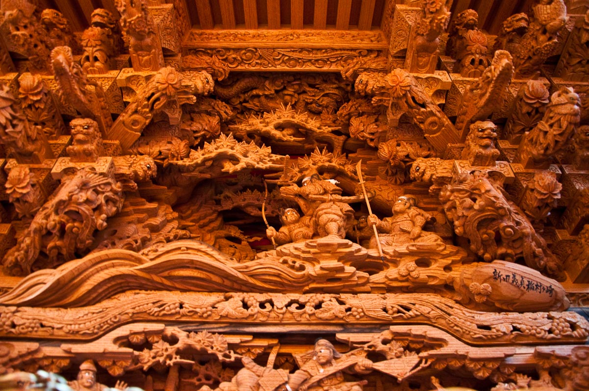

「だんじり」は、西日本でお祭りのときによく使われる大きな「山車」のことです。お祭りは、神様やご先祖さまに感謝したり、お米や野菜がたくさんとれるようにお願いしたりするために行われます。
地車と書くことが多い
地面を引いて歩く車なので、「地車」と書いて「だんじり」と読むことがあります。
鳴り物に合わせる
大太鼓、小太鼓、鉦、笛の音に合わせて、みんなで力を合わせて動かします。
木の彫刻がある
日本の神話や昔の戦いのお話などをあらわした、細かくて美しい彫刻がほられています。
小学3年生の調べ学習
祭りで使われる大きな山車「だんじり」について、言葉の意味、歴史、天王寺のだんじりの特色を、やさしい言葉で学べるページです。

「だんじり」は、西日本でお祭りのときによく使われる大きな「山車」のことです。お祭りは、神様やご先祖さまに感謝したり、お米や野菜がたくさんとれるようにお願いしたりするために行われます。
地面を引いて歩く車なので、「地車」と書いて「だんじり」と読むことがあります。
大太鼓、小太鼓、鉦、笛の音に合わせて、みんなで力を合わせて動かします。
日本の神話や昔の戦いのお話などをあらわした、細かくて美しい彫刻がほられています。
だんじりのお祭りは、江戸時代から関西地方で始まったと言われています。一番有名な大阪の「岸和田だんじり祭」は、今から約300年前の1703年に始まりました。
神様に感謝し、米や麦、豆などがたくさんとれるように願う祭りとして行われてきました。
当時のお殿様が、五穀豊穣を神様にお祈りしたことが始まりだと伝えられています。
大阪市の天王寺区には、「河堀稲生神社」という古い神社があり、ここでもだんじりのお祭りが行われています。
河堀稲生神社は、聖徳太子が四天王寺を建てたときに一緒に作られた、とても歴史のある神社だと伝えられています。
河堀稲生神社のだんじりの大きな特色は、毎年、バラバラの部品から組み立てるところから始めることです。
大人と子どもが力を合わせて、だんじりを完成させます。協力することで、町の人たちのきずなが強くなります。
祭りでは、子どもたちも「わっしょい！わっしょい！」とかけ声をかけながら、元気にだんじりを引きます。
今の天王寺区は、ビルや家がたくさん建っているにぎやかな町です。でも、大昔は今とはちがう景色が広がっていました。
天王寺区は「上町台地」という高い場所にあります。江戸時代には、西側が崖のようになっていて、遠くの海や淡路島まで見わたせたと言われています。
高台にあるため、町には歴史のある七つの坂道があります。真言坂や逢坂などは、今でも残っています。
明治時代の地図を見ると、今の天王寺区役所のあたりには大きな池があり、町の中にはくだもの畑も広がっていました。
だんじりのお祭りは、関西地方で長い歴史をもっています。始まりには、いくつかの言い伝えがあります。
だんじりを引くときの音楽「お囃子」は、豊臣秀吉が「大坂城」を作ったとき、石を運ぶ人たちが元気を出すために歌ったかけ声がもとだと言われています。
だんじりを引くお祭りが本格的に広がったのは、江戸時代の中ごろだと言われています。お米がたくさんとれることや、病気がはやらないことを神様にお祈りしました。
とても有名な岸和田のだんじり祭も、当時のお殿様が、お米や麦などがたくさんとれるように神様へお祈りしたのが始まりだと伝えられています。
祭りのときに、かざりをつけて引いたりかついだりするものです。
木や石などをけずって、形やもようを作ることです。
米、麦、豆などの作物がたくさんとれることを願う言葉です。
地域の若い人たちが集まり、祭りや町の活動を進めるグループです。
大阪の町の中を南北に続く、高くなった土地です。
天王寺にある、歴史のある七つの坂道のことです。
お祭りで、太鼓や笛などを使って演奏する音楽です。
豊臣秀吉が作った、大阪にある大きなお城です。
天王寺区は、昔は海が見わたせる、緑の多い高い場所でした。だんじりのお祭りは、お城づくりのかけ声や江戸時代からの願いとつながり、何百年も大切に引きつがれてきました。今、みんなでだんじりを引く町や音楽には、そんな歴史がつまっています。